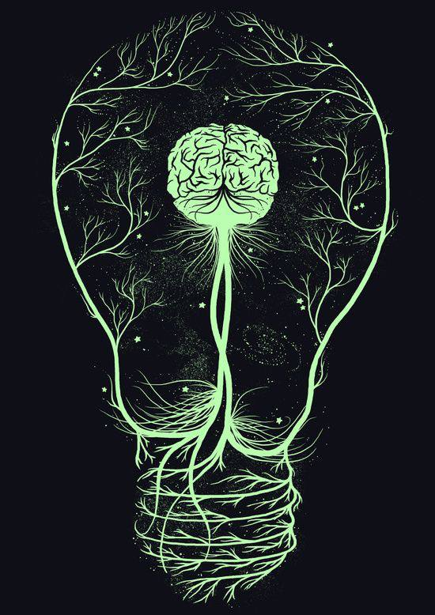
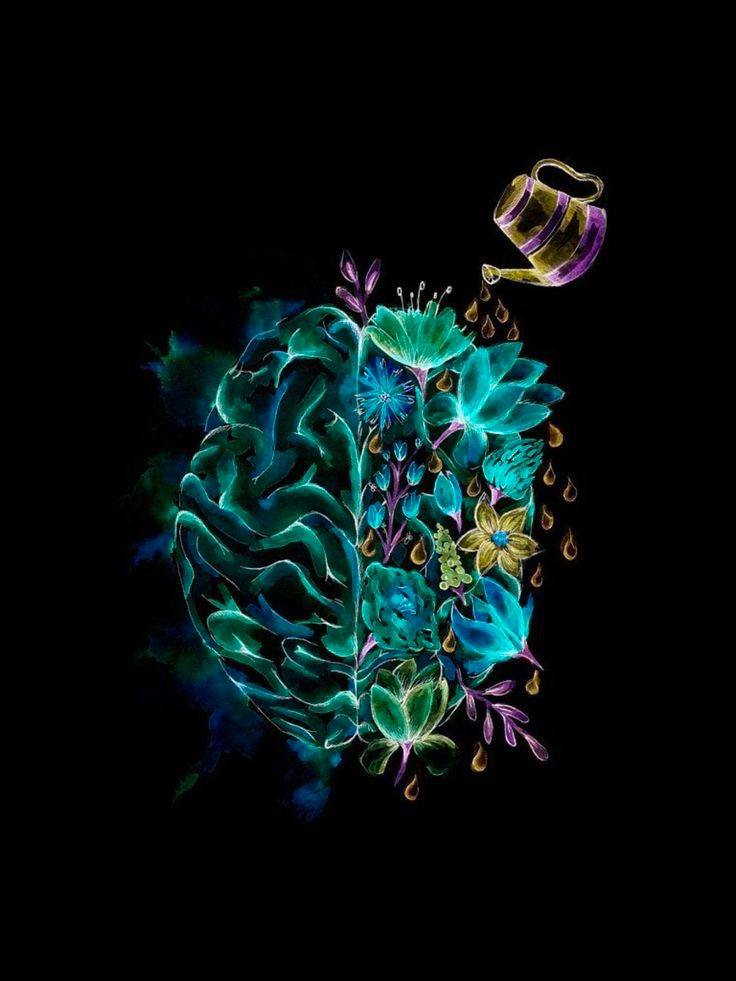

<div id="ajax-page" class="ajax-page-content">
    <div class="ajax-page-wrapper">
        <div class="ajax-page-nav">
            <!-- <div class="nav-item ajax-page-prev-next">
            </div> -->
            <div class="nav-item ajax-page-close-button">
                <a id="ajax-page-close-button" href="#"><i class="lnr lnr-cross"></i></a>
            </div>
        </div>

        <div class="ajax-page-title">
            <h1 style="float:right">التطور ، المرونة العقلية</h1>
        </div>

        <div class="row life">
            <center>
                <div class="col-sm-8 col-md-8 portfolio-block">
                    <div class="owl-carousel portfolio-page-carousel">
                        <div style="display: flex;justify-content: space-between;" class="item">
                            
                            
                        </div>
                    </div>

                    <!-- <div class="portfolio-page-video embed-responsive embed-responsive-16by9">
                    <iframe class="embed-responsive-item" src="https://www.youtube.com/embed/0pjhD5ySdPs"></iframe>
                </div> -->
                    <script type="text/javascript">
                        jQuery(document).ready(function ($) {
                            $('.portfolio-page-carousel').imagesLoaded(function () {
                                $('.portfolio-page-carousel').owlCarousel({
                                    smartSpeed: 1200,
                                    items: 1,
                                    loop: true,
                                    dots: true,
                                    nav: true,
                                    navText: false,
                                    margin: 10,
                                    autoHeight: true
                                });
                            });
                        });
                    </script>
                </div>
            </center>

            <div class="col-sm-12 col-md-12 portfolio-block conten">
                <!-- Project Description -->
                <div class="project-description">
                    <div class="block-title" style="float: right;">
                        <h3> </h3>
                    </div>
                    <!-- <ul class="project-general-info">
                        <li>
                            <p><i class="fa fa-user"></i>mahmoud yousef</p>
                        </li>
                    </ul> -->

                    <center class="txt">
                        <span>
                            أول شئ أن تتقبل الأشياء بسلام
                            ولا تكن متشدداً للآراء
                            هناك فرق بين التشدد والتمسك بالرأى بسلام
                            <br>
                            <br>
                            التشدد بيعمل تحجر فى العمليات العقلية ، فبيخل بسريان وتدفق الأفكار السامية والداعمة للموضوع
                            <br>
                            <br>
                            قد تكون صائب فى مفهومك ولكن تشددك يُعيقك عن التعبير وتوصيل الفكرة بالشكل السليم ، وتنعكس
                            الصورة وتقابل بحالة نفور
                            <br>
                            <br>
                            الأفكار بتنشأ من الحالة التى عليها النفس
                            فالهدوء بيخلى التدفق المعلوماتى أكثر ترتيباً
                            <br>
                            والعكس صحيح
                            <br>
                            <br>
                            الحياة متطورة باستمرار على الجانب الإيجابى والسلبى
                            فمواكبتك للتطور بيخلى عقلك نشط ومتفاعل بمرونة مع الأحداث
                            <br>
                            <br>
                            البُعد عن التطور والعيش بأفكار السابقين بيخلى فيه فجوة بينك وبين أشياء وأحداث كتيرة ومن هنا
                            بتنشأ المشاكل فى الحياة سواء مادياً أو مشاعر الخوف والقلق و غير ذلك
                            لأن أصلاً أنت هنا حتى تتطور
                            التطور بينقى النفس
                            ورؤيتك بتزداد لأصل الحياة مع كل تطور
                            <br>
                            <br>
                            عكس التطور هو التدنى
                            المياة الراكدة بتلوث وبيزداد تلوثها كلما بقيت دون تغيير
                            <br>
                            <br>
                            حالات التدنى الأخلاقى والإرهاب والإغتصاب
                            كلها نتيجة اللا تطور وزيادة الحياة صعوبة
                            فالنفس أصبحت معمية بالسلبيات
                            فخرجت السلوكيات والأفعال كما تراها فى كل مجتمع
                            وبحسب النسبة تقدر تعرف قدر التلوث العقلى
                            والمفاهيم الخاطئة المتبعة
                            أو المفاهيم الصحيحة التى شوهت بعقول ساذجة
                            <br>
                            <br>
                            مهم أن تبقى واعياً لاختلافات البشر
                            والتعاملات بدرجاتها وتدركاتها المختلفة
                            وتتقبل الجميع
                            وتخاطب الناس على قدر عقولهم
                            وتذكر مرة أخرى لن تستطيع فعل ذلك إلا لما تركز على نفسك أولاً ، وتراجعها باستمرار .
                        </span>
                    </center>
                    <span
                    style="font-family: 'Shadows Into Light', cursive; float: right; border-bottom: 0.5px solid white;">Muhammad
                    B. Salama</span>
                <br>
                </div>
                <!-- Project Description -->
            </div>
        </div>
    </div>
</div>